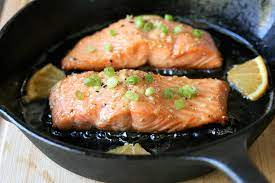

Crisp Salmon

Salmon: A proteic and omega 3 infused superfood
Fresh, Asian-inspired salmon fillets with a crispy skin and an orange, ginger,
and honey glaze. Unlike most similar recipes, this
one is made without soy sauce and with totally fresh ingredients. The result
is a bright, fresh fish with great taste and texture. The fresh ingredients
are the star here: Don't substitute with dried, powdered, or frozen ingredients!
I served on top of rice and steamed broccoli garnished with green onions.
- ½ cup freshly squeezed orange juice
- ¼ cup honey
- ¼ cup rice vinegar
- ¼ cup olive oil
- 4 cloves garlic, minced
- 3 tablespoons grated fresh ginger
- 1 tablespoon sesame seeds
- ½ teaspoon salt
- Combine orange juice, honey, vinegar, olive oil,
garlic, ginger, sesame seeds, salt, and pepper in a large
resealable plastic bag.
Add salmon. Seal and marinate in the refrigerator for 1 to 2 hours.
- Place a large cast iron
skillet in the oven. Preheat the oven to 500 degrees F (260 degrees C).
- Carefully remove skillet from oven when it just barely starts to smoke.
Add vegetable oil and place salmon fillets, skin-side down, in the skillet.
- Bake in the hot oven until fish flakes easily
with a fork, or to your desired doneness, 5 to 9 minutes. Serve immediately.